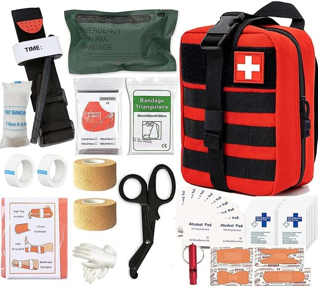
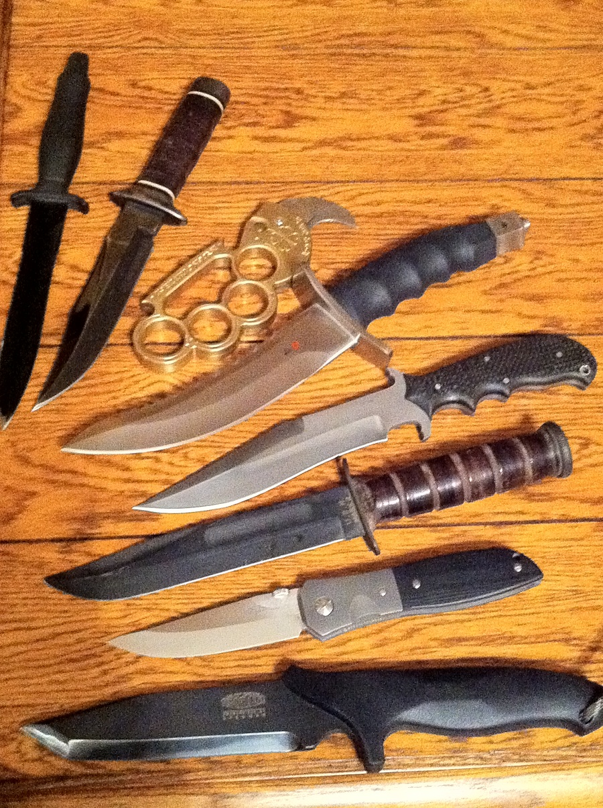
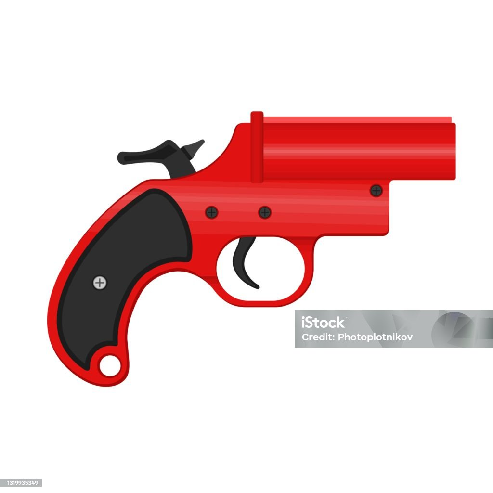
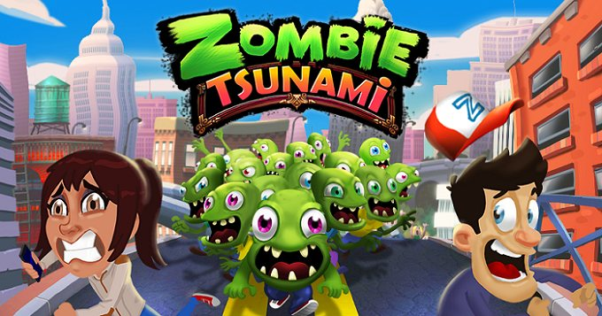

A sobrevivência é a base para a reconstrução da vida na Terra. Então, vamos lá! Olá, sobrevivente! Você caiu neste guia de paraquedas? Você deve estar boiando, mas vamos ajudar você a sobreviver mais um dia.
1: Manter recursos

2: Evitar cidades grandes
3: Sempre estar alerta
4: Mirar na cabeça
.jpeg)
Os zumbis podem sentir o cheiro do sangue de longe, então, se você se ferir, tente fazer uma atadura o mais rápido possível.
1: Kit médico
2: Arma branca

3: Injeção de adrenalina
.jpeg)
4: Arma de fogo
5: Sinalizador

Nômades: pessoas que não ficam no mesmo lugar.
Suicidas: pessoas que não seguem as regras.
Camper: pessoas que não saem dos lugares.
Zumbis: mortos-vivos.
1: Infecção, como ela ocorre? A infecção ocorre durante a mordida do zumbi, quando seus parasitas são injetados na pele.
2: Como aconteceu a primeira infecção? A primeira infecção ocorreu durante um experimento acidental, causado por uma mistura de vários compostos químicos descartados em um lixo, onde o paciente zero se infectou.
3: Quem é o paciente zero? Foi um mendigo cujo nome ninguém sabia.
